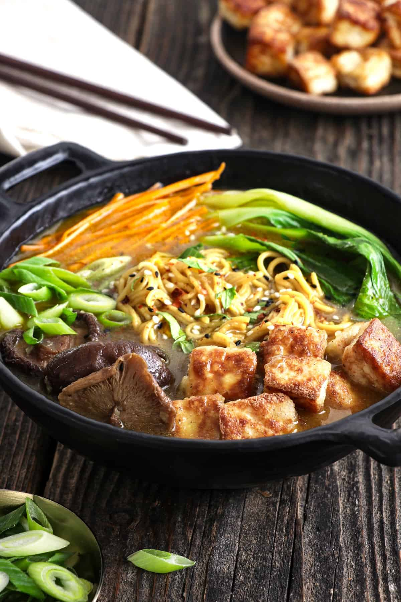

Ramen

Desription
This is one of the most delicious recipes of Ramen you will have laid eyes on. Ramen is a delight
in the japanese culture and a something I thoroughly enjoy.
Ingredients
- Sesame oil
- Firm Tofu
- Vegetable broth
- Shitake Mushrooms
- Ramen noodles
- Miso paste
- bok choy
Instructions
- Heat sesame oil in your pan and fry onion, garlic and ginger. Saute until browned.
- Boil ramen in a separate pot of water
- Add vegetable broth vegetables, mushrooms, miso paste over the frying pan and add enough water
to make it into a soup.